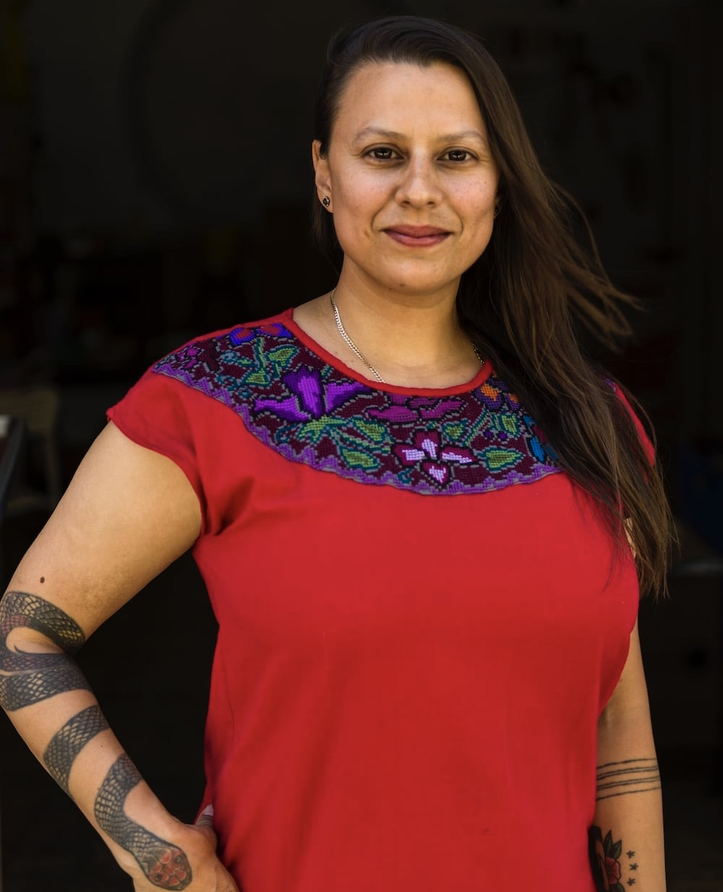
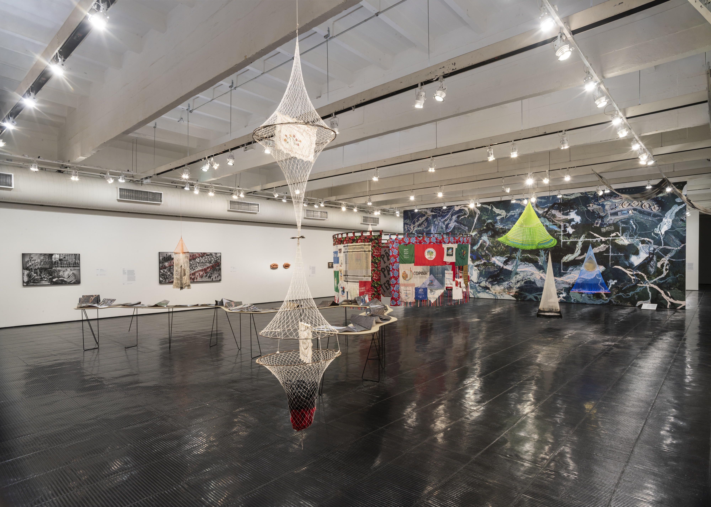
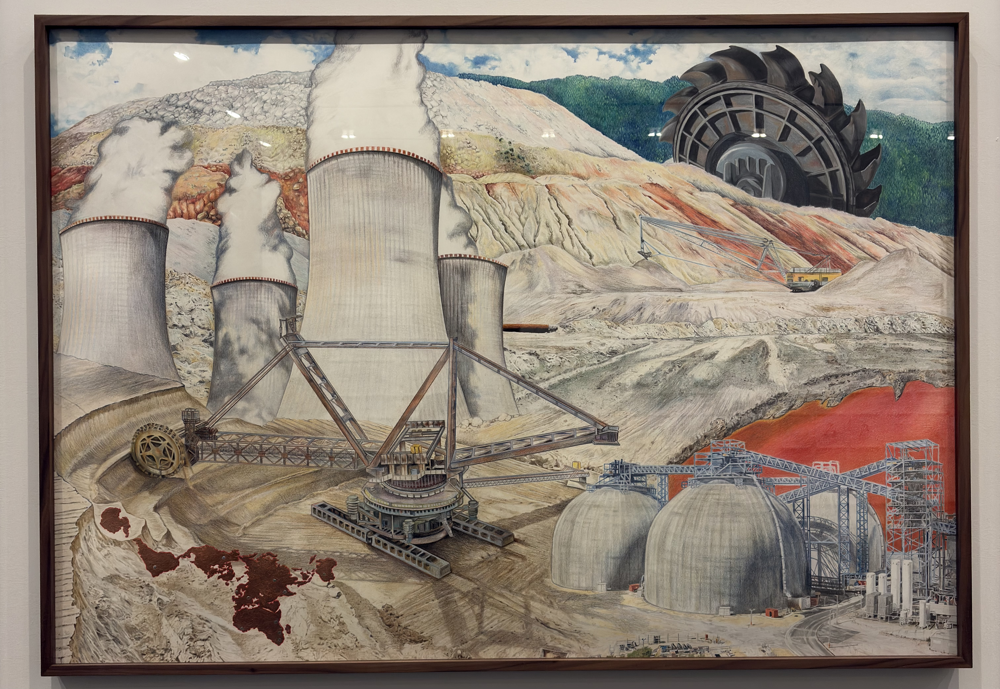
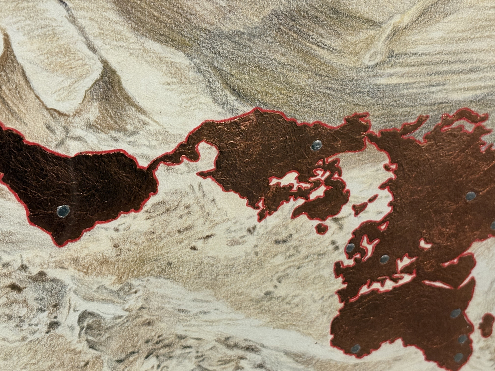
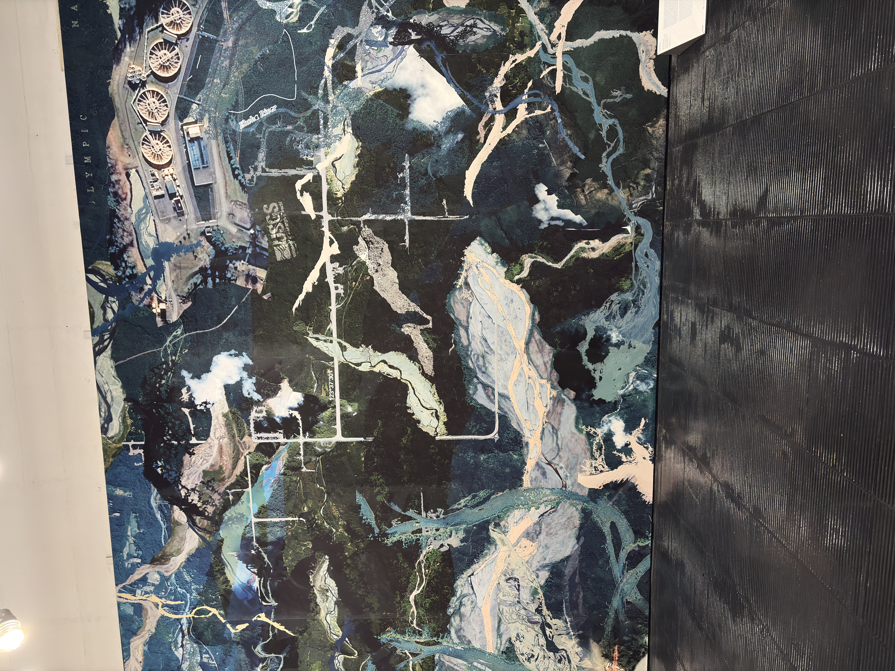
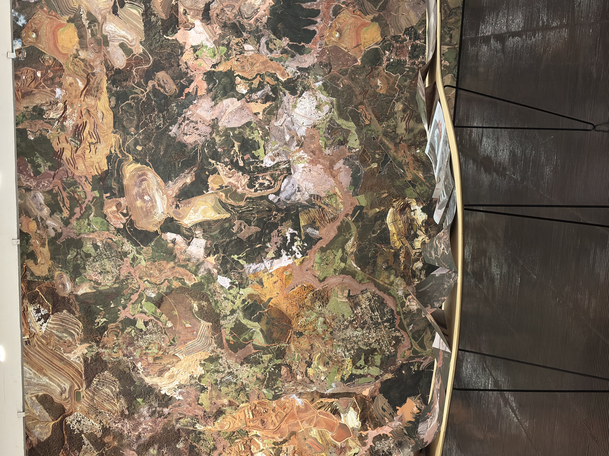
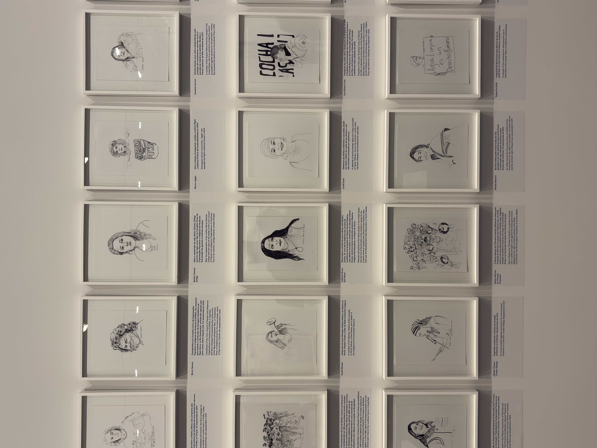

O intuito desse conteúdo é apresentar brevemente a exposição de Carolina Caycedo, presente no Edifício Lina Bo Bardi, sob curadoria de Isabella Rjeille, curadora do MASP e comentar algumas percepções que tive.
sobre caroline caycedo:
Carolina Caycedo é uma artista colombiana que nasceu em Londres e hoje mora em Los Angeles. Em suas realizações, a artista busca discutir a relação do indivíduo com o espaço, abordando temáticas em relação à água, à alimentação digna e à transição energética justa, por meio da produção de colagens, esculturas, pinturas, ilustrações e instalações, além da direção de conteúdos audiovisuais.

Uma das primeiras coisas que notei foram os trabalhos pendurados no teto do espaço expositivo que figuram redes de pesca, em que cada um deles são apresentados de forma única, alguns com cores vivas, outros com adereços como búzios, penas, cordas, pedaços de madeira e panos estampados, ilustrando o vínculo com as águas, mas sobretudo a presença de uma identidade por trás do manuseio desse instrumento. Destacados na exposição, eles representam e enaltecem um povo e uma cultura a partir de um objeto presente no cotidiano de uma população ribeirinha, evidenciando a resistência, a vida, o orgulho, a tradição e as marcas trazidas por um povo com contato diário com o rio.

Em uma parte da exposição há três pinturas feitas à mão com lápis de cor, que me impressionaram, principalmente por serem feitas com lápis e também por conta de seus traços precisos, detalhes, proporcionalidade e técnicas de pintura. A obra abaixo fala sobre a antropicidade, ou seja, a transformação do espaço pelo ser humano, apresentando a atividade mineradora e as degradações deixadas no solo, além de ilustrar a ocupação de uma usina nuclear, ambas atividades econômicas baseadas no lucro, que modificam a forma natural da paisagem.

Nas três pinturas existe um mesmo desenho feito por uma textura que se destaca, é como se fosse uma colagem com papel laminado. Esse detalhe representa os mapas da América do Sul, América Central, América do Norte, Oceania e Ásia. Interessante observar a posição das representações geográficas desses continentes dentro dessa obra, uma vez que eles estão localizados no solo, o que pode simbolizar a ideia de matéria-prima, ligando diretamente ao processo de colonização que esses continentes vivenciaram durante o colonialismo europeu. Iniciada com as grandes navegações, que tinham interesses mercantis e religiosos, a colonização foi responsável por controlar todos os continentes, extraindo excessivamente matéria-prima como metais preciosos, minérios e produtos agrícolas, os quais fortaleceram a economia europeia, além de cometer atos genocidas e submeter negros e indígenas ao trabalho forçado. O Brasil, por exemplo, foi uma região que sofreu extrema extração de pau-brasil e ouro. Além disso, vale destacar também o Imperialismo na África, Ásia e Oceania, realizado pela Europa, EUA e Japão, que extraíram recursos fundamentais nas suas industrializações.

No espaço expositivo há duas paredes em destaque, preenchidas por completo com uma imagem de satélite. A primeira trata do Rio Elwha, que está localizado na região noroeste dos Estados Unidos, apresentando a recuperação desse rio após a retirada de suas barragens, graças à agitação dos movimentos sociais. O que trouxe de volta a fauna e a flora do território.

A segunda trata das áreas deformadas pela mineração, evidenciando os estragos na natureza, que afetam diretamente, por exemplo, a vida de determinadas etnias indígenas. Negligenciando a relação de pertencimento das comunidades com a terra.

Uma parte da exposição conta com vários retratos de mulheres ativistas com uma breve descrição sobre elas. Dentre vários na parede, há um dedicado para Marielle Franco, uma mulher, negra e socióloga extremamente importante para o Brasil.

Conhecer um pouco do trabalho de Carolina Caycedo me faz pensar em Ailton Krenak, líder indígena, filósofo e escritor que discute sobre questões ambientais, pertencimento à terra e a destruição do planeta em prol do capital. Então, gostaria de fazer uma indicação de um dos seus livros chamado “A vida não é útil”, que critica a visão utilitarista e o olhar para a natureza como objeto de exploração.
Isso foi um pouco da exposição Confluências de Carolina Caycedo, que está disponível no MASP (Museu de Arte de São Paulo), no Edifício Lina Bo Bardi, 1º andar, até o dia 04.10.2026, com entrada gratuita às terças-feiras o dia inteiro e sextas-feiras das 18h até às 21h. Uma exposição contemporânea que fala sobre a preservação da memória coletiva, da relação do indivíduo com a natureza, que denuncia os impactos ambientais, que amplia o conhecimento de mundo e de outras realidades, que enfatiza a importância dos movimentos sociais e destaca a participação feminina na luta por direitos. A palavra “Confluências” significa a junção de duas ou mais coisas num mesmo lugar e é justamente o que a exposição propõe, pois evidencia as conexões complexas que um espaço possui.